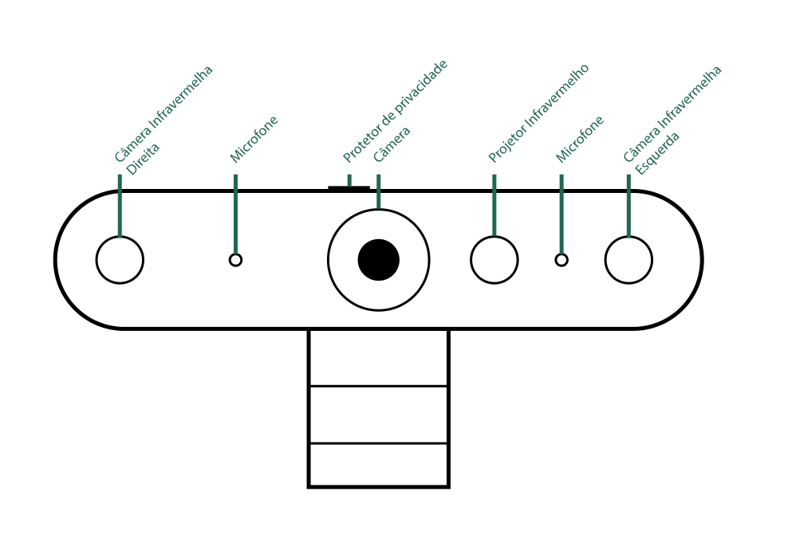
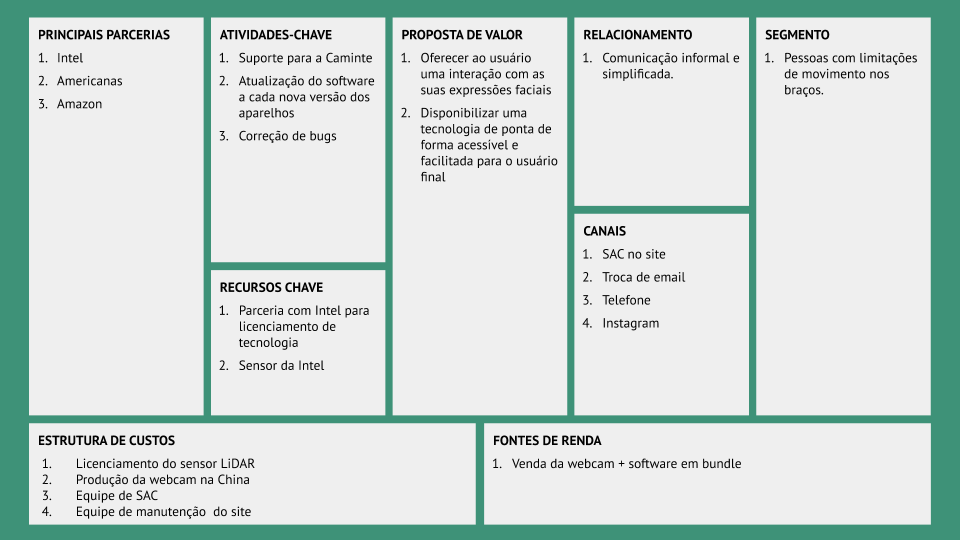
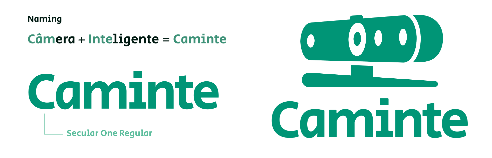
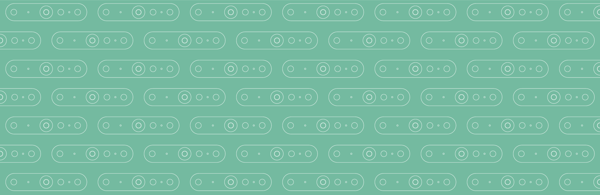

É notável o potencial que o traqueamento facial em tempo real tem para gerar novas tecnologias e permitir explorar interfaces novas no mundo digital. E esse projeto se aproveita justamente disso: o rosto humano controlando o cursor do mouse do seu computador. Para isso, desenvolvemos um produto e uma marca, a Caminte, que possibilita essa interação por meio de uma câmera cheia de sensores. Desenvolvemos a identidade visual e os desenhos que contextualizam o produto e explicitam os seus mais diversos usos.
A câmera e os seus dispositivos
A Caminte conta com diversos sensores que possibilitam o traqueamento facial em tempo real. Equipada com tecnologia Intel RealSense, a nossa câmera é capaz de mapear o rosto do seu usuário com muita precisão, afinal ela contém dois sensores infravermelhos para captar uma imagem 3D do rosto do usuário até mesmo em baixa luminosidade. Além disso, com uma câmera principal em conjunto com dois microfones fazem que a Caminte também possa ser usada para chamadas em vídeo em alta qualidade de som e imagem.
Figura 1: Desenho técnico da câmera Caminte com seus sensores.
Uma proposta de valor
A Caminte é um empreendimento de tecnologia e, por isso, todas as suas implicações precisaram ser tratadas como tal. O nosso business model canvas explicitam qual a proposta de valor do nosso produto e quais as atividades-chave para que ele exista como tal. A nossa relação com o cliente é o nosso diferencial, afinal queremos estar sempre presentes para dar o melhor suporte possível. Um dos nossos valores é de facilitar o uso do seu computador, então queremos te ajudar!
A jornada do usuário
Para facilitar ainda mais o uso, fizemos essa ilustração da sua jornada enquanto usuário para utilizar a Caminte. É bem simples, basta seguir esse passo-a-passo! Se tiver alguma dúvida, entre em contato com a gente pelo email contato@caminte.com.br!

Instalando a sua Caminte
A instalação da sua Caminte é bem simples. Nosso produto já vem com uma haste que possibilita ser encaixada no seu monitor, na sua mesa ou em qualquer outro lugar da sua preferência. Tenha cuidado na hora de colocar esse suporte e não o force muito porque se não pode quebrar.
O encaixe deve ser tão simples quanto o mostrado abaixo:
Use o seu rosto!
A Caminte já vem configurada com dois conjuntos de expressões faciais para cada ação do seu computador. Recomendamos que você teste as duas para saber qual a melhor se adapta ao seu rosto. Você também pode configurar as ações de forma personalizada.
Sobre a nossa marca
Fale sobre a gente nas suas redes sociais e utilize essas informações ao seu favor! Temos um manual de identidade visual para você que quiser estabelecer parcerias ou utilizar a nossa marca em sua publicação digital. Além disso, você sabia que o nosso nome vem da junção de duas palavras?! Poisé, dá uma conferida aí embaixo.
 